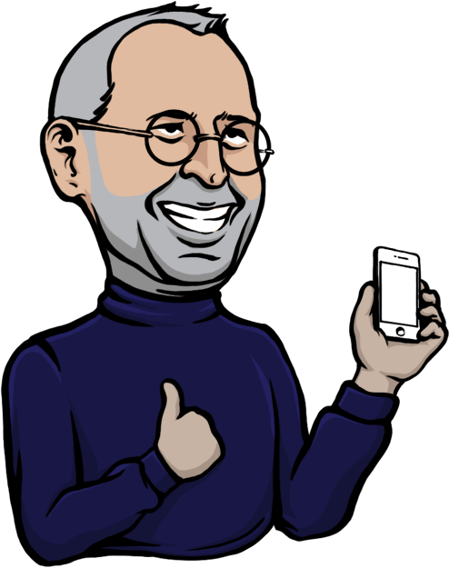
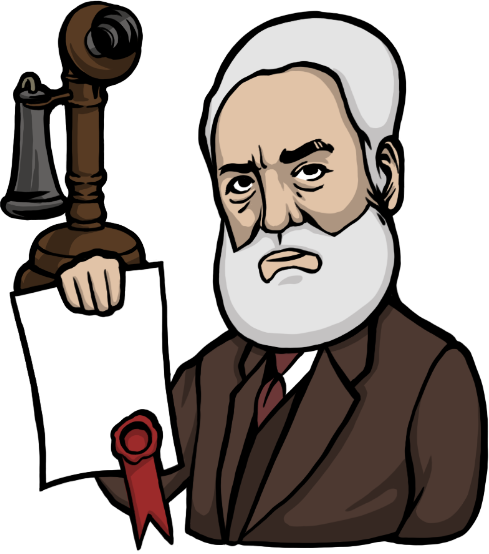
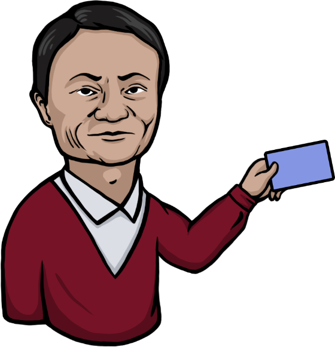
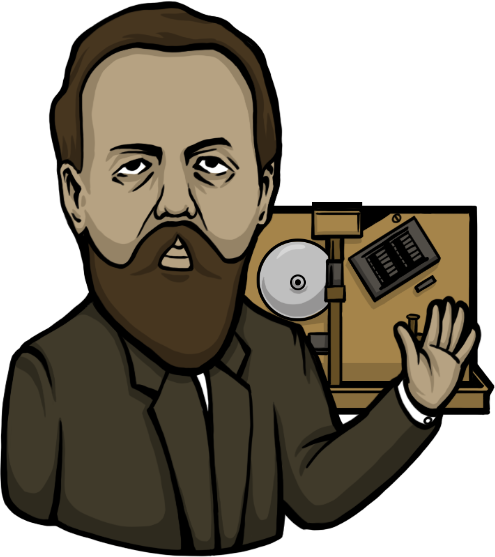
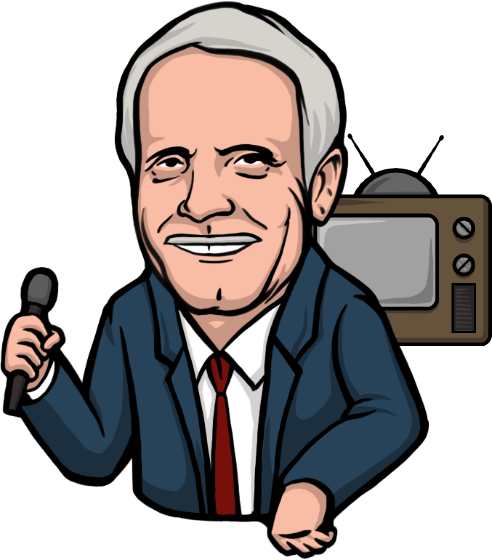
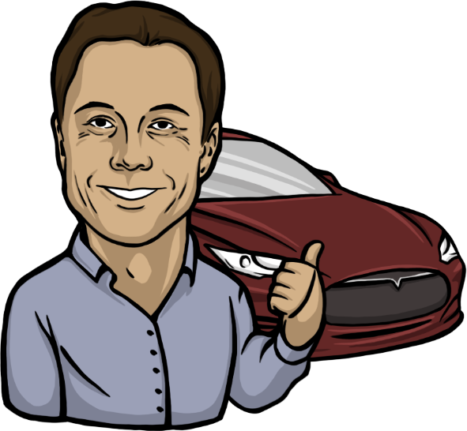
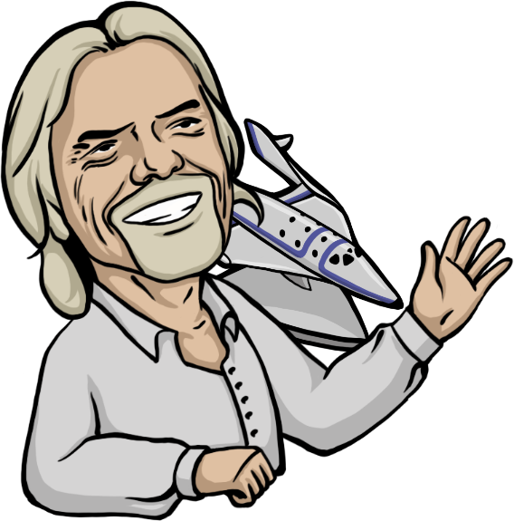
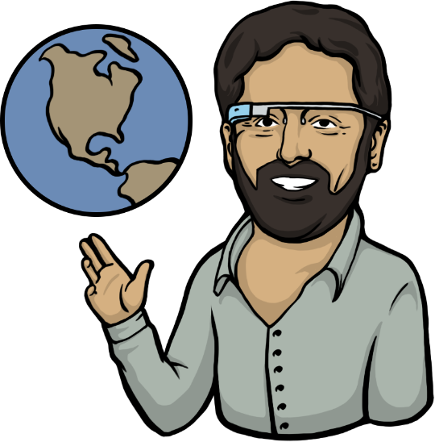
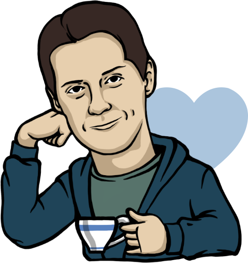
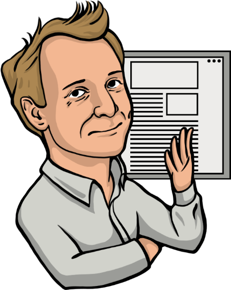

×
Календарь
успеха 2016
Пусть в новом 2016 году герои нашего календаря от месяца к месяцу
вдохновляют вас своими свершениями на бизнес-подвиги!
9 января 2007 года Стив Джобс анонсировал iPhone, революционное устройство, навсегда изменившее мир.
«Пройденный путь и есть награда»
Январь
4 февраля 2004 года Марк Цукерберг основал Facebook
«Самое главное в бизнесе — сконцентрироваться на создании чего-то важного»
Февраль
7 марта 1876 года Александром Беллом был получен патент на изобретение телефона
«Человек, как правило, обязан очень мало тому, с чем он родился; человек - это то, что он делает из себя.»
Март
15 апреля 1999 Джек Ма зарегистрировал Alibaba.com
«Сегодня будет непросто, завтра будет еще хуже, но послезавтра все будет прекрасно.»
Апрель
На заседании Русского физико-химического общества в Петербурге 25 апреля (7 мая) 1895 года А. С. Попов продемонстрировал радио
«Радио изменит мир!»
Май
Тед Тёрнер 1 июня 1980 года создал первый круглосуточный новостной телеканал CNN
«Не важно, выиграл ты или проиграл, важно то, как ты играл»
Июнь
19 июля 2006 года в городе Санта-Моника Илон Маск представил электромобиль
«Если вы верите в какое-то дело, то не сомневайтесь в нем, идите до конца»
Июль
Ричард Бренсон основывает Virgin Galactics
«Нравственность — вовсе не пустой звук в бизнесе. В ней весь смысл.»
Август
2 сентября 1998 года основана корпорация Google
«Что если человек смог бы получить ответ на вопрос, даже не задавая его? Было бы круто!»
Сентябрь
10 октября 2006 года Павел Дуров запустил самую успешную российскую социальную сеть Вконтакте
«Созидание намного интереснее потребления, а внутреннее состояние несоизмеримо важнее внешнего.»
Октябрь
20 ноября 1985 вышла первая версия Microsoft Windows
«Когда вам в голову пришла хорошая идея, действуйте незамедлительно!»
Ноябрь
Тим Бернерс-Ли написал первый в мире браузер в декабре 1990
«Данные - драгоценная вещь!»
Декабрь